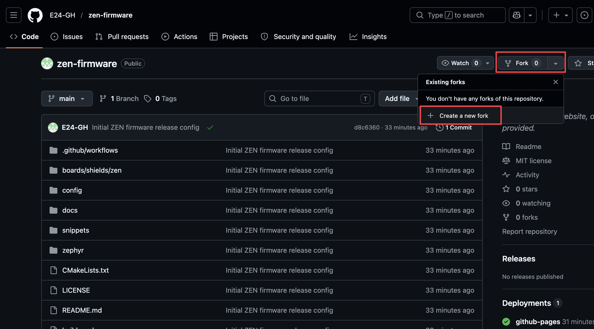
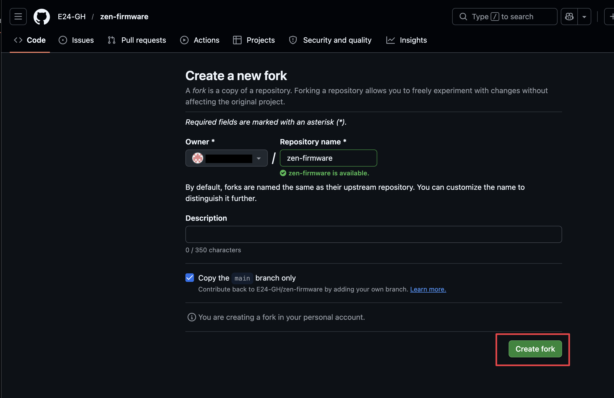
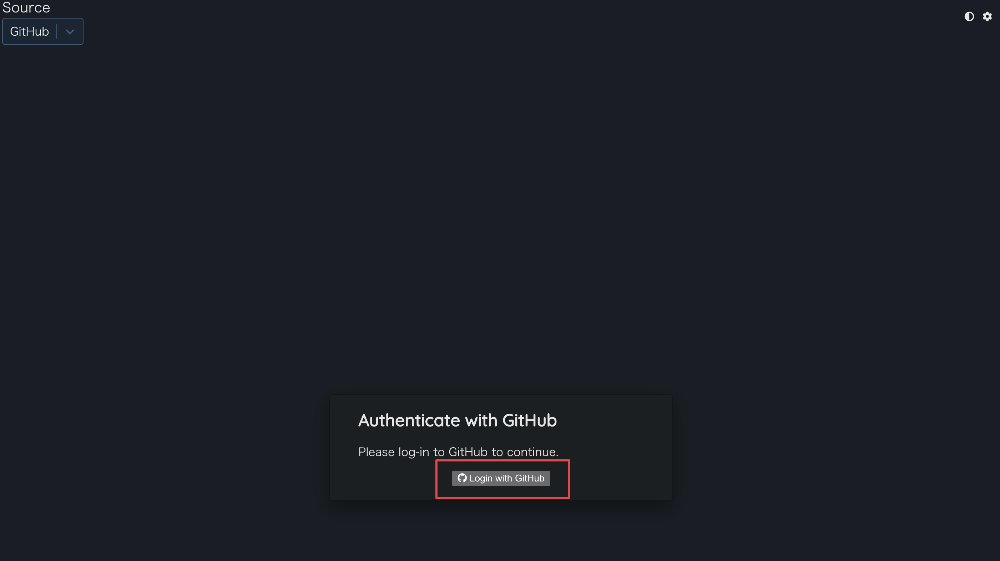
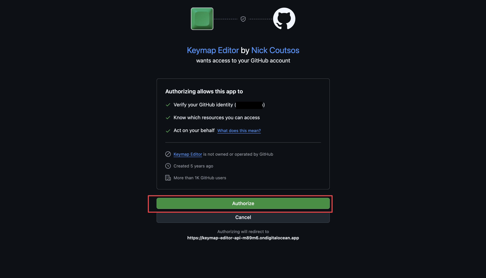
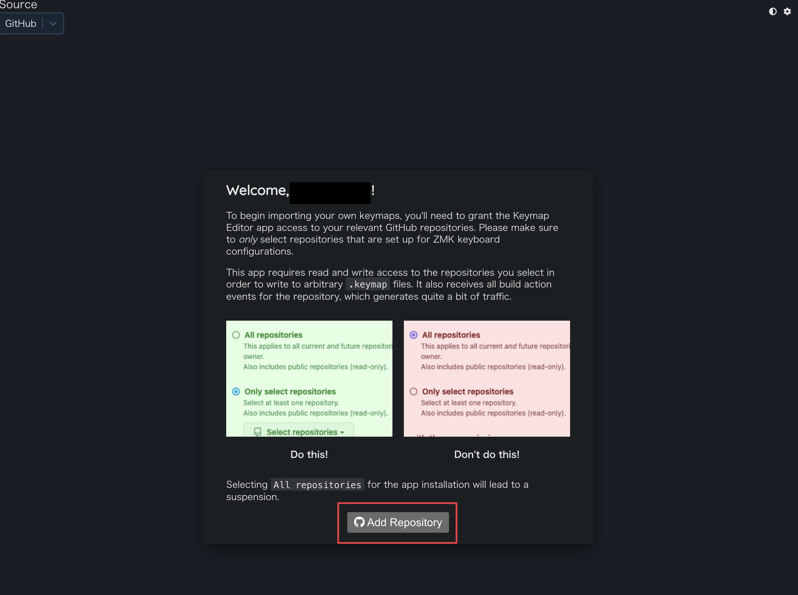
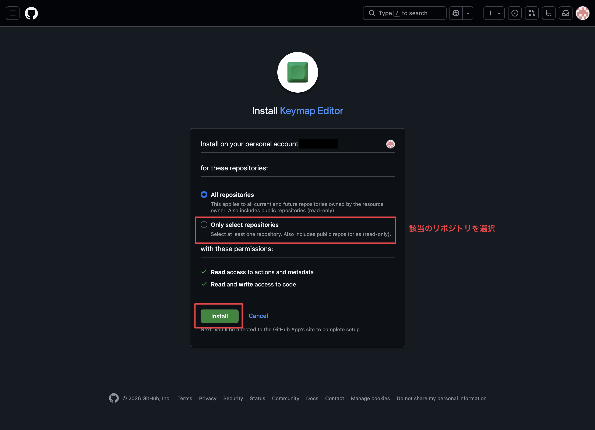
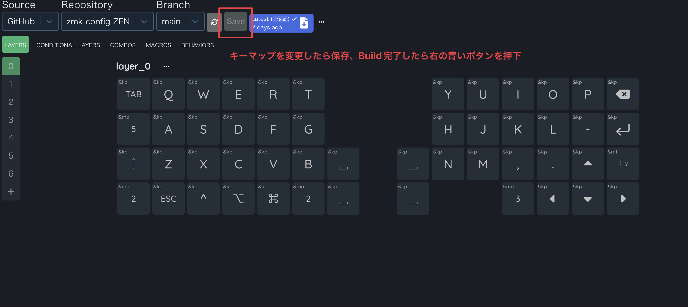
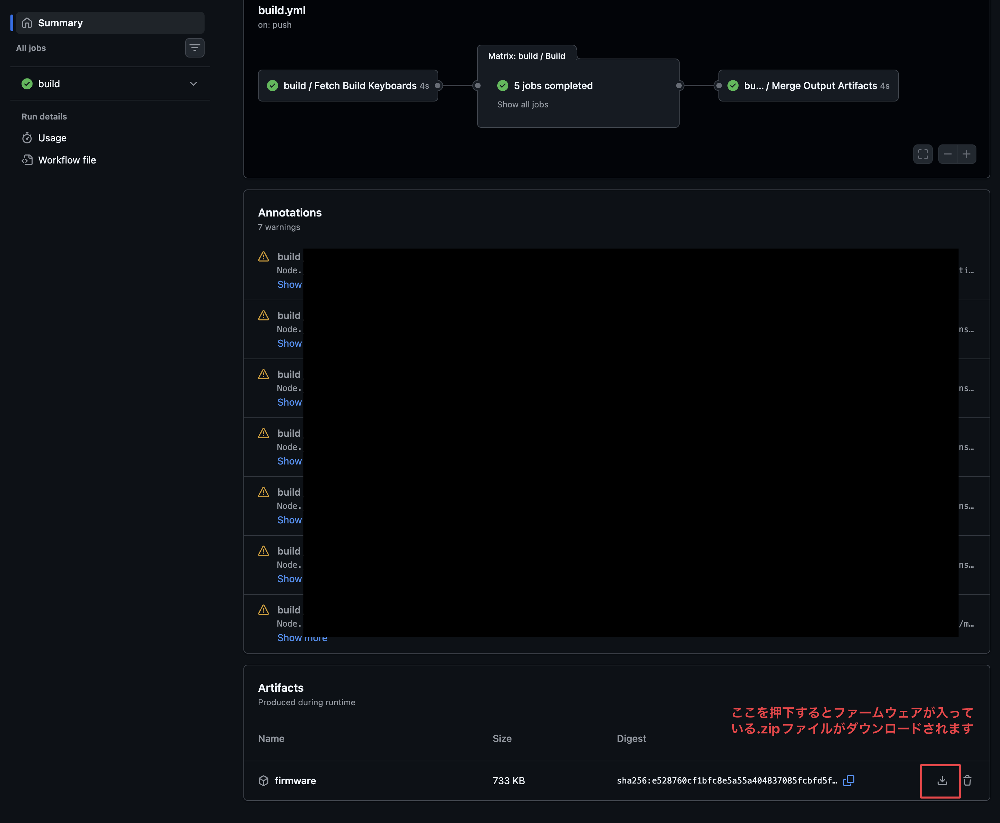

キー配列セットアップ
ZEN のキー配置を編集して、GitHub Actions でファームウェアを作るまでの手順です。
必要なもの
- GitHub アカウント
- ZEN 本体
- BMP Boost（左右ぶん）
- データ通信対応の USB Type-C ケーブル
- Mac / PC
リポジトリを fork する
fork は、このファームウェア設定を自分の GitHub アカウントにコピーする操作です。キー配置を自分用に編集するため、まず fork を作成します。
- E24-GH/zen-firmware を開きます。
- 画面右上の
Forkを押し、Create a new forkを選びます。 - Owner に自分の GitHub アカウントを選びます。
- Repository name は通常そのまま
zen-firmwareで構いません。 Copy the main branch onlyは ON のままにします。Create forkを押します。

Fork メニューから Create a new fork を選びます。
Create fork を押すと、自分のアカウントにコピーが作成されます。https://github.com/あなたのアカウント/zen-firmware のようになります。以降は自分の fork したリポジトリを使います。
Keymap Editor にログインする
Keymap Editor を使うと、ブラウザ上でキー配置を編集できます。初回は GitHub ログインと認証が必要です。
- Keymap Editor を開きます。
Login with GitHubを押します。- 認証画面が出たら
Authorizeを押します。


Authorize を押して、Keymap Editor の利用を許可します。fork したリポジトリを追加する
- Keymap Editor で
Add Repositoryが表示されたら押します。 - GitHub App のインストール画面で、
Only select repositoriesを選びます。 - 自分が fork した
zen-firmwareだけを選び、Installを押します。 - Keymap Editor に戻ったら、Source を
GitHubにして自分のzen-firmwareを開きます。 config/keymap.keymapが読み込まれ、ZEN のレイアウトが表示されれば OK です。

Add Repository を押して、fork した zen-firmware を追加します。
All repositories ではなく Only select repositories を選び、fork した zen-firmware だけを選択します。Sync fork を押してから、もう一度 Keymap Editor で開いてください。
キー配置を編集して保存する
- Keymap Editor 上でキーを変更します。
- 変更が終わったら
Saveを押します。 - 保存すると、自分の fork した GitHub リポジトリに変更が反映されます。
保存後、GitHub Actions が自動でファームウェアを build します。ダウンロードは次の手順で GitHub Actions 画面から行います。

Save を押します。保存すると GitHub Actions で build が始まります。GitHub Actions でファームウェアを作る
- 自分の
zen-firmwareリポジトリを開きます。 Actionsタブを開きます。- 初回だけ、Actions を有効化するボタンが出る場合があります。その場合は有効化します。
- 最新の build を開きます。
- build が完了したら、図の赤枠のダウンロードボタンを押します。

firmware 行にあるボタンを押すと、zip ファイルがダウンロードされます。ダウンロードした zip ファイルの中には、以下の UF2 ファイルが入っています。
settings_reset.uf2zen_right_trackball_pmw3610_central.uf2zen_left_peripheral.uf2
ファームウェアを書き込む
通常の書き込み
- 右手側の BMP Boost をブートローダーモードにします。
zen_right_trackball_pmw3610_central.uf2を書き込みます。- 左手側の BMP Boost をブートローダーモードにします。
zen_left_peripheral.uf2を書き込みます。
Bluetooth 接続がうまくいかない場合
- Mac / PC の Bluetooth 設定から
ZENを削除します。 settings_reset.uf2を書き込みます。- USB を外します。
- ZEN の電源を入れます。
- もう一度、通常ファームウェアを書き込みます。
- Mac / PC の Bluetooth 設定から
ZENを接続します。
困ったとき
Keymap Editor で App Disabled と表示される
GitHub App が使えるリポジトリに、自分の fork した zen-firmware が含まれていない状態です。画面の Add Repository から fork したリポジトリを追加してください。
Keymap Editor でレイアウトが表示されない
fork が古い、または config/info.json が読み込まれていない可能性があります。fork を同期してから再度開いてください。
Actions が動かない
fork したリポジトリの Actions タブを開き、GitHub Actions を有効化してください。
Bluetooth 接続が不安定
一度 settings_reset.uf2 を書き込んでから、左右の通常ファームウェアを書き直してください。Mac / PC 側に残っている古い ZEN のペアリング情報も削除してください。
解決しないときは、ファームウェアのリポジトリの Issues もあわせてご確認ください。github.com/E24-GH/zen-firmware